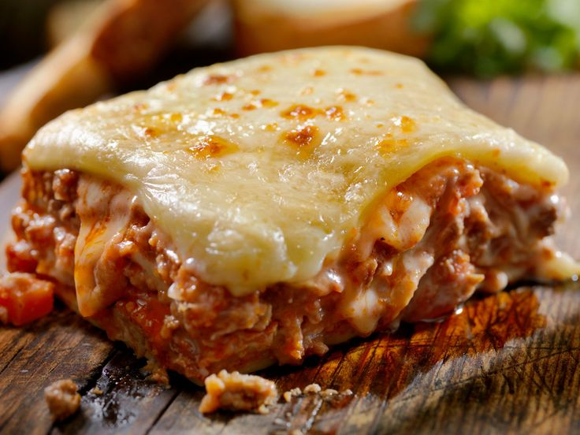

LASAGÑA

Descripción
La lasaña es un plato tradicional de la cocina italiana que se ha popularizado en todo el mundo por su delicioso sabor y su versatilidad. Consiste en capas alternadas de láminas de pasta, generalmente rectangulares y planas, que se intercalan con diversos rellenos, como carne molida, verduras, queso y salsa de tomate. Cada capa se cubre con una mezcla de quesos, como mozzarella y parmesano, que al hornearse se derriten y crean una textura cremosa y dorada en la superficie. La lasaña se hornea hasta que la pasta está tierna y los sabores se integran perfectamente, resultando en un plato reconfortante y sustancioso.
Existen numerosas variaciones de la lasaña, adaptadas a diferentes gustos y dietas. Por ejemplo, la lasaña vegetariana sustituye la carne por espinacas, berenjenas o calabacín, mientras que la lasaña blanca utiliza salsa bechamel en lugar de tomate. También hay versiones con pescado, pollo o incluso bases sin gluten para quienes tienen intolerancias alimentarias. Este plato, que combina texturas y sabores de manera armoniosa, es ideal para compartir en reuniones familiares o eventos especiales, y su preparación, aunque requiere tiempo, siempre es recompensada con un resultado delicioso y satisfactorio.
Ingredientes
- Láminas de lasaña: Pueden ser frescas o precocidas, según tu preferencia.
- Agua y sal: Para cocinar la pasta (si no usas láminas precocidas).
- Carne molida: 500 g de carne de res, cerdo o una mezcla de ambas.
- Cebolla: 1 unidad, picada finamente.
- Ajo: 2 dientes, picados.
- Salsa de tomate: 500 ml (puede ser casera o comprada).
- Tomate triturado: 200 g
- Aceite de oliva: 2 cucharadas.
- Hierbas: Orégano, albahaca y tomillo al gusto.
- Sal y pimienta: Al gusto.
- Queso mozzarella: 200 g, rallado o en láminas.
- Queso parmesano: 100 g, rallado.
- Aceite o mantequilla: Para engrasar el molde.
Preparacion
- Calienta el aceite de oliva en una sartén grande a fuego medio.
- Agrega la cebolla picada y el ajo, y sofríe hasta que estén tiernos y fragantes.
- Incorpora la carne molida y cocina hasta que esté bien dorada, rompiéndola con una cuchara para que no queden grumos.
- Añade el tomate triturado, la salsa de tomate, las hierbas (orégano, albahaca, tomillo), sal y pimienta al gusto.
- Cocina a fuego lento durante 15-20 minutos, removiendo ocasionalmente, hasta que la mezcla esté espesa y sabrosa. Reserva.
- Hierve agua en una olla grande con una pizca de sal.
- Cocina las láminas de lasaña según las instrucciones del paquete, generalmente de 8 a 10 minutos.
- Escúrrelas y colócalas en un recipiente con agua fría para evitar que se peguen.
- Precalienta el horno a 180°C (350°F).
- Engrasa un molde para horno con mantequilla o aceite.
- Coloca una capa fina de salsa bechamel en el fondo del molde.
- Agrega una capa de láminas de lasaña, cubriendo todo el fondo.
- Extiende una capa del relleno de carne sobre la pasta.
- Cubre con una capa de salsa bechamel y espolvorea queso mozzarella y parmesano.
- Repite el proceso: láminas de pasta, relleno, bechamel y queso, hasta llenar el molde. Termina con una capa de pasta, bechamel y una generosa cantidad de queso.
- Hornea la lasaña durante 25-30 minutos, o hasta que esté burbujeante y dorada por encima.
- Si deseas un gratinado más dorado, puedes encender el grill del horno los últimos 5 minutos.
- Saca la lasaña del horno y déjala reposar 10 minutos antes de cortarla. Esto ayudará a que se asiente y sea más fácil servir.
- Corta en porciones y sirve caliente. ¡Acompaña con una ensalada fresca o pan de ajo!
Inicio